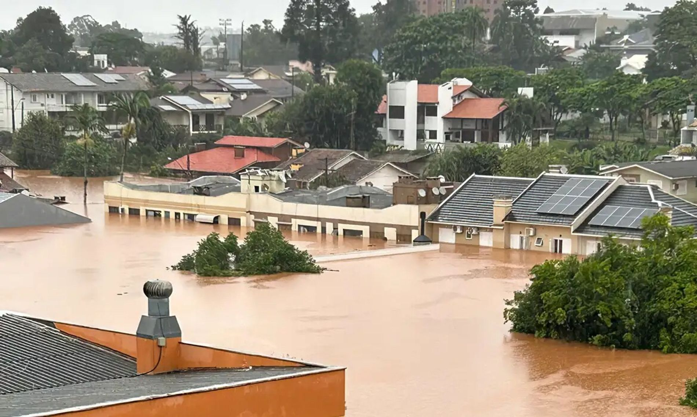

O Problema que Iremos Solucionar
As enchentes causam danos significativos à infraestrutura e à vida das pessoas.
É crucial encontrar soluções eficazes para mitigar esses impactos.

Tecnologias que Iremos Utilizar
Utilizaremos sensores IoT e análise de dados em tempo real.
Essas tecnologias permitirão uma resposta rápida e eficaz às enchentes.

Nossos Objetivos
Reduzir os danos causados por enchentes em áreas urbanas.
Proporcionar segurança e tranquilidade para a população afetada.

Nosso Público-Alvo
Nosso público-alvo inclui comunidades vulneráveis a enchentes.
Além disso, órgãos governamentais e ONGs que atuam na área.

Benefícios da Solução
Proporciona alertas antecipados e informações em tempo real.
Melhora a coordenação de resposta a emergências.

Como a Solução Poderá Ajudar no Dia a Dia
-
João: Como morador, desejo visualizar um mapa com as áreas de risco de enchente para avaliar minha segurança.
-
Lucas: Como usuário, quero receber alertas visuais e sonoros sobre enchentes iminentes para tomar decisões rápidas.